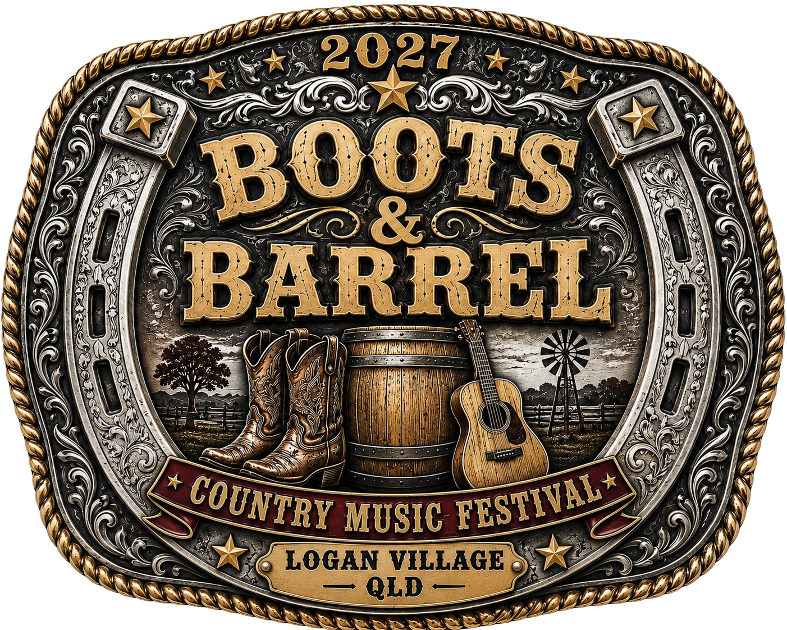

Marketing & digital exposure
Potential recognition across festival social media, the website, digital advertising and promotional campaigns.
A new country music experience is taking shape. Australian country music, live entertainment and community — all coming together for the inaugural Boots & Barrel Country Music Festival.
Sponsorship opportunitiesDiscover the festival
Boots & Barrel Country Music Festival is a new event currently in development for the Logan region in May 2027.
Our vision is an eight-hour Saturday program celebrating Australian country music, with an anticipated audience of 2,000+ attendees. We are working towards a memorable experience for fans and valuable connections for local businesses.
The festival remains subject to development and final approvals. Event arrangements and programming are yet to be announced.
We're inviting businesses, suppliers and organisations to express early interest in supporting the inaugural festival. This is an opportunity to start a conversation and explore how we could work together.
Potential recognition across festival social media, the website, digital advertising and promotional campaigns.
Potential brand visibility through promotional materials, signage, banners and on-site recognition.
Explore opportunities to connect with attendees and bring your brand into the festival experience.
Proposed VIP hospitality opportunities, with ticket allocations for major sponsors subject to final packages.
Products, services, equipment and professional expertise may be considered alongside financial contributions.
Get involved at the beginning of a new event celebrating country music, community and Australian talent.
Tell us about your business and the type of partnership you're interested in. We'll keep you informed as the sponsorship prospectus and event details are finalised.
Register sponsorship interest →Or email info@bootsandbarrelcmf.com | Phone 0483 889 298